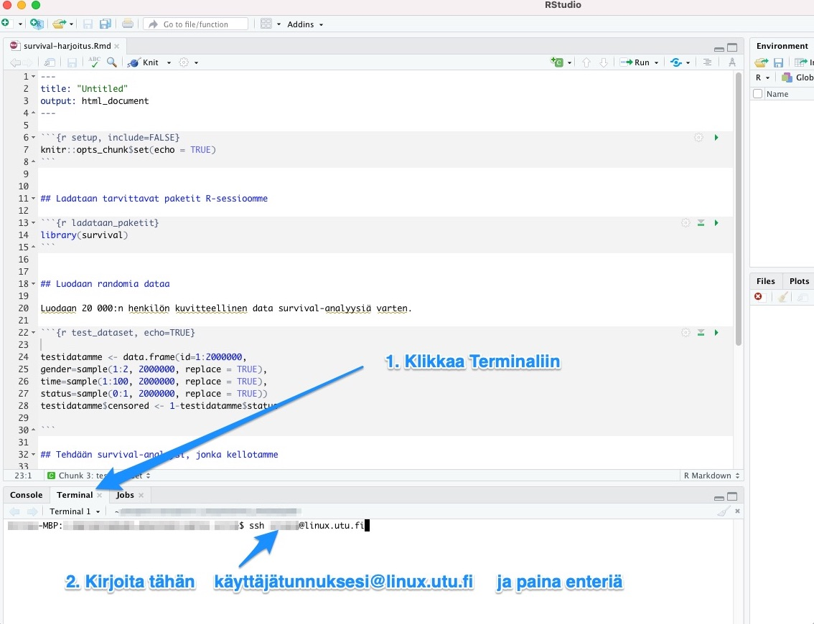
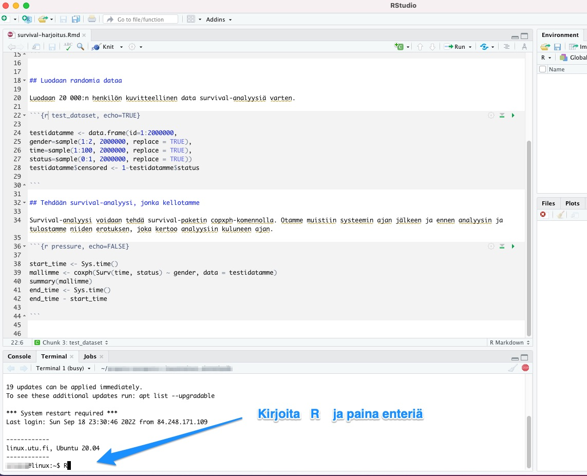
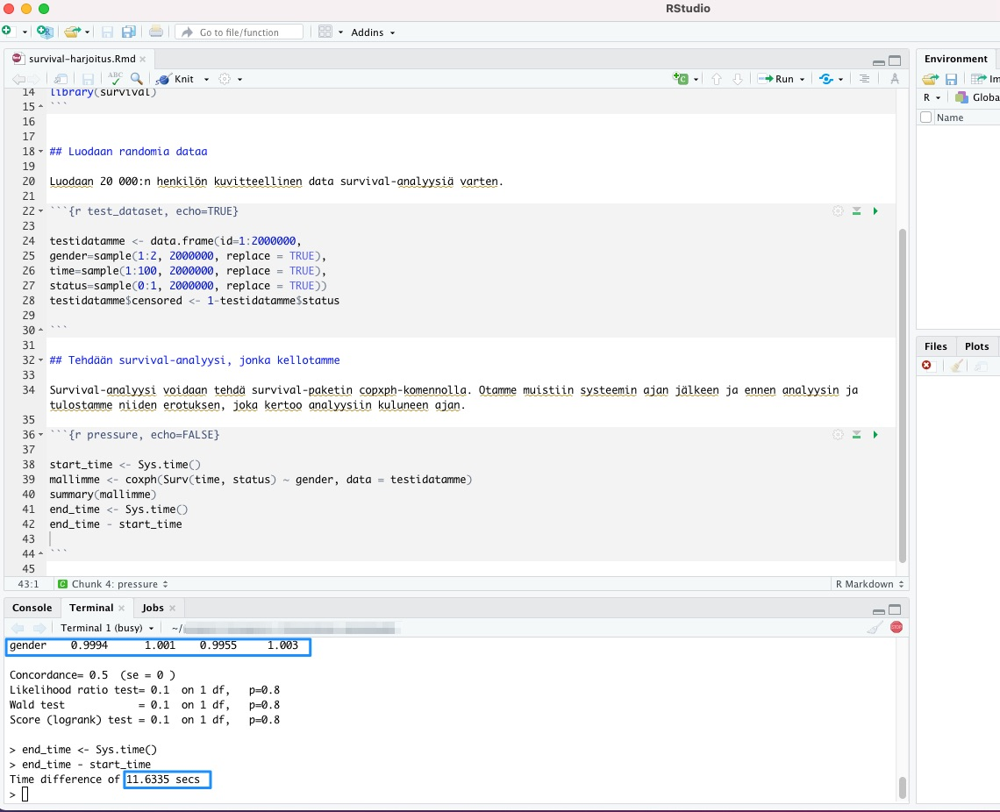

B RStudio ja SSH
Joonatan Palmu
Raskaammassa tieteellisessä laskennassa saattaa tulla tarpeelliseksi siirtyä tekemään analyysit oman kannettavan sijaan raskaalle tietokoneklusterille. Tämä saattaa myös olla tarpeen, jos tutkittava aineiston saatavuutta on rajoitettu tiettyyn pilveen. Usein klusterit on toteutettu Linuxia käyttäen. Sujuvan tutkimustyön kannalta olisi kuitenkin analyysit hyödyllistä pystyä edelleen ajamaan interaktiivisesti RStudiossa omalla kannettavalla: käyttäjä siis kontrolloi prosesseja omalta kannettavaltaan, mutta järeämpi tietokoneklusteri toteuttaa ne. Tämä on usein mahdollista seuraavia ohjeita käyttäen.
B.1 Rstudion terminaali
- RStudiossa on
R console-välilehden lisäksiTerminal-välilehti. Näiden kahden välilehden erona on, että RStudio avaa edeltävään R komentorivin ja jälkimmäiseen järjestelmän yleisen komentokehoitteen (engl. shell), joka on tässä tapauksessa yleensä nimeltään joko bash tai zsh. Yleisessä komentokehoitteessa voidaan suorittaa kaikenlaisia komentoja kuten esimerkiksi ajaa R-komentoriviä etäyhteyden yli(!). - Valitsemalla
Terminal-välilehti, voidaan ssh-komennolla ottaa yhteys tietokoneklusteriin. Tässä esimerkissä käytämme Turun yliopiston Linux-serveriä.
B.2 SSH-avaimet
SSH-avaimet ovat salasanaa parempi vaihtoehto tunnistautumiseen sekä käytännöllisyyden että turvallisuuden puolesta
Oman ssh-avaimen olemassaolon voi varmistaa komennolla
ls ~/.ssh/id_rsa.pubTarvittaessa uusi ssh-avain on helppo luoda komennolla
ssh-keygenoletusparametreja käyttäen (älä aseta salasanaa avaimelle)- Edellä tämän oppaan Appendix-osuudessa on kuvattu kohta kohdalta miten SSH-avain luodaan.
Oman julkisen avaimen saa kerrottua palvelimelle komennolla
ssh-copy-id -i ~/.ssh/id_rsa.pub linux.utu.fiTämän jälkeen yhdeyden käyttäminen onnistuu ilman salasanojen syöttämistä
Huom. valitettavasti eräät harvat palvelimet on konfiguroitu niin, että ne eivät hyväksy tätä hyvää tunnistautumismenetelmää
Jos Windowsin shell ei tunnista
ssh- taissh-keygen-komentoja, täytyy WindowsinOptional Features-valikosta asentaaOpenSSH Client
B.3 Tmux
Linux-palvelin päättää sinne käynnistetyt prosessit pääsääntöisesti SSH-yhteyden katketessa. Yhteys katkeaa usein päivittäin koneen mennessä offline-tilaan muun muassa lounasaikaan ja kotiin lähdettäessä.
Oman käyttömukavuuden vuoksi kannattaa opetella käyttämään tmux-komentoa, joka ei yhteyden katketessa tuhoudu vaan menee vain nukkumaan. Tällöin voi myös jättää raskaan analyysin ajoon kotiin lähtiessä eikä oman kannettavan sulkeminen vaikuta ajon etenemiseen.
- Ensimmäisellä kerralla tmux käynnistetään komennolla
tmux - Vanhaan sessioon saa palattua komennolla
tmux a - Tmuxin tottelee
Ctrl+balkuisia pikanäppäimiä, mutta kahdella edellisellä komennolla selviää myös hyvin tutustumatta hienompiin ominaisuuksiin
- Ensimmäisellä kerralla tmux käynnistetään komennolla
B.4 Etäyhteyden avaaminen Rstudiossa
Kirjoitetaan
Terminal-välilehdellessh username@linux.utu.fiKäynnistetään tmux joko komennolla
tmuxtaitmux a- Jos yhteys varsinaiselle palvelimelle on epävakaa, kannattaa harkita yhteyden ottamista yliopiston linux-serverin kautta, joka on aina yhteydessä verkkoon
- Käytännössä siis lisää tähän väliin komento
ssh username@server
Käynnistetään R komennolla
R

SSH-yhteys Linux-serverille SSH-yhteyttä käyttäen
B.5 Komentojen suorittaminen etäyhteyden yli
- Kaikkien edellisten vaiheiden tarkoituksena on saada aikaan tilanne, jossa RStudiossa kirjoitettua R-koodia kyetään lähettämään yksinkertaisella pikanäppäimellä ajettavaksi etäyhteyden yli ajettuun R- konsoliin.
- Tällainen kehitysympäristö tekee interaktiivisen ja miellyttävän R-kielen kirjoittamisen mahdolliseksi - kaikki ohjelmointihan lopulta perustuu ajatukseen kokeilla interaktiivisesti erilaisia asioita ja katsoa mitä näistä asioista seuraa.
- Siirrytään .Rmd-tiedostossa kiinnostavalle riville ja lähetetään tämä rivi terminaaliin pikanäppäimellä
Ctrl+Alt+EntertaiCmd+Alt+Enter
Komennon lähettäminen terminaaliin (huomaa kursori rivillä 15)
B.6 Harjoitus: survival-analyysi
Teemme seuraavaksi harjoituksena survival-analyysin kuvitteellisesta 2 miljoonan tutkittavan aineistosta. Katsomme, onko sukupuolella vaikutusta survival-tuloksiin.
Lataamme ensin survival-paketin sessioomme käskyllä:
library(survival)Tämän jälkeen luomme kuvitteellisen datan seuraavilla käskyillä:
testidatamme <- data.frame(id=1:2000000,
gender=sample(1:2, 2000000, replace = TRUE),
time=sample(1:100, 2000000, replace = TRUE),
status=sample(0:1, 2000000, replace = TRUE))
testidatamme$censored <- 1-testidatamme$statusSurvival-analyysin teemme copxph-komennolla. Otamme muistiin systeemin ajan jälkeen ja ennen analyysin ja tulostamme niiden erotuksen, joka kertoo analyysiin kuluneen ajan. Kaikki tämä tapahtuu seuraavilla käskyillä:
start_time <- Sys.time()
mallimme <- coxph(Surv(time, status) ~ gender, data = testidatamme)
summary(mallimme)## Call:
## coxph(formula = Surv(time, status) ~ gender, data = testidatamme)
##
## n= 2000000, number of events= 1e+06
##
## coef exp(coef) se(coef) z Pr(>|z|)
## gender -0.0001806 0.9998194 0.0019999 -0.09 0.928
##
## exp(coef) exp(-coef) lower .95 upper .95
## gender 0.9998 1 0.9959 1.004
##
## Concordance= 0.5 (se = 0 )
## Likelihood ratio test= 0.01 on 1 df, p=0.9
## Wald test = 0.01 on 1 df, p=0.9
## Score (logrank) test = 0.01 on 1 df, p=0.9end_time <- Sys.time()
end_time - start_time## Time difference of 13.66436 secsMallin tuloksista voimme ensinnäkin nähdä, että sukupuolella ei ollut vaikutusta päätetapahtumaan, koska kaikki data oli kuvitteellista ja umpimähkäistä. Tulosten alla näemme, että prosessiin kului allekirjoittaneen tietokoneella seuraava määrä sekunteja:
## Time difference of 13.66436 secsVoimme vertailun vuoksi ajaa samat analyysit Turun yliopiston Linux-serverillä seuraavasti.
Kirjoita terminaaliin ssh käyttäjänimesi@linux.utu.fi ja paina enteriä:

Kirjoita tämän jälkeen terminaaliin R ja paina enteriä:

Aja yllä mainitut 3 koodi-chunkia seuraavasti: paina kunkin käskyn kohdalla Ctrl+Alt+Enter Windowsissa tai Cmd+Alt+Enter Macissä. Jos koodi jakaantuu usealle riville, maalaa ensin kaikki kyseisen koodi-chunkin rivit ja paina sitten vasta edeltävässä virkkeessä mainittu kirjainyhdistelmä:

Näemme, että sukupuoli ei vaikuttanut Linux-serverinkään tekemässä analyysissä tulokseen, koska kaikki data oli tosiaan umpimähkäistä (huom. omat tuloksesi voivat poiketa minimaalisesti tässä näytetyistä, koska satunnainen data luodaan uudelleen joka ajossa tässä harjoituksessa):

Lisäksi voimme nähdä, ettei yliopiston Linux-serveri tässä esimerkissä suoriutunut allekirjoittaneen kannettavaa tietokonetta kummoisemmin. Mutta joka tapauksessa tilastoanalyysien taakkaa voi tällä metodilla jakaa oman koneensa ja etäkoneen välillä.
B.7 Yhteenveto
Pyri saamaan R-kielen kehityksessä aikaan tilanne, jossa voit ajaa nopeasti ja interaktiivisesti erilaisia komentoja ja katsoa mitä näistä komennoista seuraa
- Ota esimerkiksi suuresta data framesta vain osajoukko raskaaseen vaiheeseen kunnes koodipätkä toimii
Tällaisen kehitysympäristön saaminen aikaan on äärimmäisen tärkeää ja siihen on hyvä pyytää tarvittaessa apua (ei ole järkevää olla satoja tunteja tehoton)
Kannattaa pitää silmät auki vielä parempien vaihtoehtojen löytämiseksi (esim. Visual Studio Code tai Jupyter-notebookit)